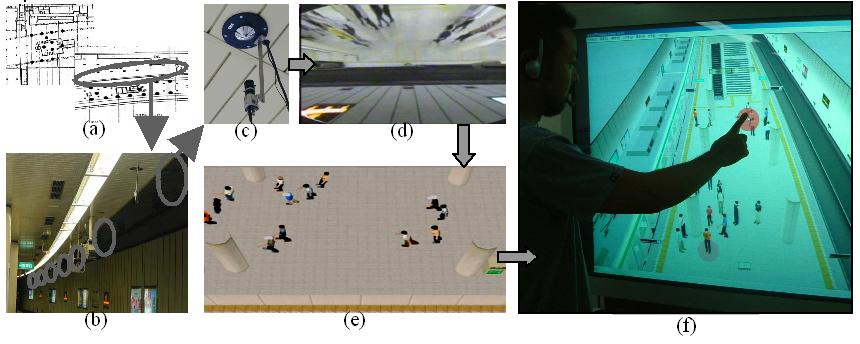

京都駅のような公共施設における危機管理は市民にとって重要だが，市民に参加の機会は提供されていない．例えば，学校やオフィスのように施設の利用者が集まって避難訓練を実施するということはできない．そこで市民参加による危機管理に向けて，京都駅という物理的な公共空間に対応するデジタルな公共空間を仮想都市空間システムによって構築し，避難訓練を行うためのシミュレーションを開発した．
避難シミュレーションを妥当なものとするには，群集エージェントの行動ルールをどう設計するかが課題となる．我々は，現実空間で行われた避難行動の実験結果を仮想空間で再現できるように行動ルールを設計した．この実験は，図１(a)に示すように左右に仕切られた部屋の左側に集まっている16名の避難者を4名の誘導者が右側にある正しい出口まで誘導するというものである．左側の出口は間違いであり，誘導者はここから避難者が出るのを防がなければならない．最初に我々は，誘導者の指示に気付いた場合はそれに従い，それまでは自分の判断で行動するようルールを設計した．そうしたシミュレーションの結果は実験結果と食い違うものであった．そこで，誘導者の指示に気付くまでの間，自分で行動するのではなく他人の行動をまねるように行動ルールを書き変えた．そうすると，実験結果とほぼ一致するシミュレーション結果が得られた．


(a) (b)
図１．避難シミュレーション
こうして設計した避難シミュレーションの教育効果を分析するために，避難の様子を上から眺める超越型の観察（図１(a)）と，仮想空間内で避難する内在型の体験（図１(b)）を比較した．被験者を，超越型のみのグループ，内在型のみのグループ，併用するグループに分け，内在型体験の教育効果を観測した．併用するグループはさらに，超越型を先に見るグループと内在型を先に体験するグループに分け，順番の違いが及ぼす影響を調べた．その結果，超越型を見た後に内在型を体験する場合の教育効果が一番高く，誘導者の振舞いや避難現場の状況に関する小テストにおいて最も高い得点を出した．次に良かったのが，超越型のみの場合と内在型を体験した後に超越型を見る場合であった．内在型のみの場合は得点が最も低かった．
現実にもとづいた行動ルールの構築に向けて，群集歩行を記録するシステムを京都駅に導入した．図２(a)の黒丸で示すとおり，コンコースに12台，ホームに16台，図２(c)に示す広角撮影用の反射鏡を備えた視覚センサを設置した．図２(b)は設置状況である．これにより，乗降口と改札口の間の人間の流れを記録できるセンサネットワークを構築した．カメラ映像（図２(d)）から人の位置を取得して仮想空間に可視化することができる（図２(e)）．周囲の環境（柱の存在や，階段など）による人の流れ，すなわち動線の合流・分岐や，人間同士の回避行動の動線への影響を分析可能である．

図２．京都駅の避難誘導システム
避難シミュレータを災害発生前の防災教育ツールとしてだけでなく，災害発生時の救援システムとしても利用できるよう，センサネットワークと組み合わせて避難誘導システムを開発した．これは，遠隔から特定の集団だけに指示できるシステムであり，複数集団に分割して誘導することによって，1か所の出口に全員が殺到するのを避けることができる．図２(f)に示すように，画面には上方から見た京都駅が描かれ，群集の行動を把握できる．集団を選択すると，該当者の携帯電話にシステムが電話をかけ音声接続が確立する．
文献：
Yohei Murakami, Toru Ishida, Tomoyuki Kawasoe and Reiko Hishiyama. Scenario Description for Multi-Agent Simulation. International Joint Conference on Autonomous Agents and Multiagent Systems (AAMAS2003), pp.369-376, 2003.
Hideyuki Nakanishi, Satoshi Koizumi, Toru Ishida and Hideaki Ito. Transcendent Communication: Location-Based Guidance for Large-Scale Public Spaces. International Conference on Human Factors in Computing Systems (CHI2004), pp.655-662, 2004.
連絡先：
京都大学 社会情報学専攻 中西英之 nakanishi at i.kyoto-u.ac.jp